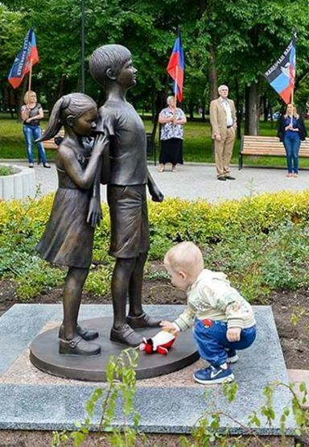
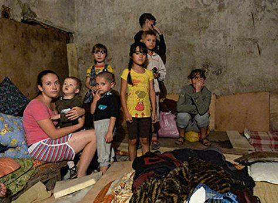
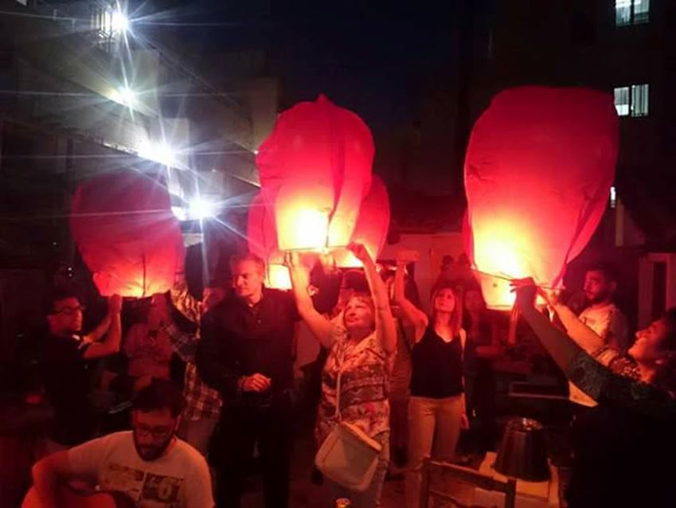
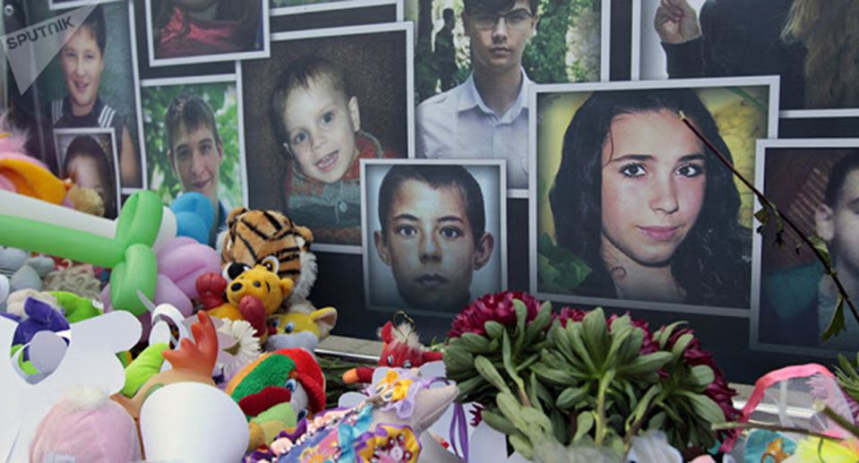
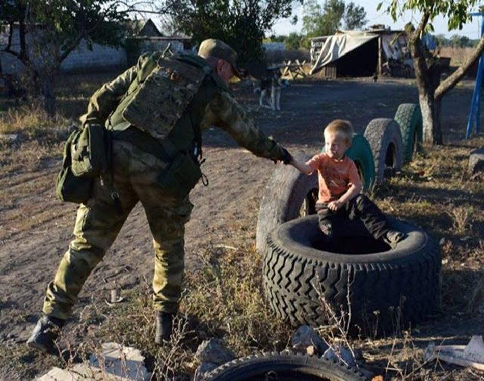

Consacrer une journée pour rappeler l'importance de l'enfance dans les sociétés humaines est une tradition aujourd'hui reconnue et pratiquée par tous les pays du Monde, avec cependant des dates différentes. Suite au congrès de la Fédération internationale des femmes (à Paris) le Monde russe a décidé en 1949 de choisir la date du 1er juin pour célébrer l'enfance dans les pays du bloc soviétique. 40 ans plus tard les Nations Unies suivent cet exemple et décident de suivre l'initiative russe en choisissant la date du 20 novembre.
DANS LE DONBASS, RECUEILLEMENT ET RESPECT
Comme les deux précédentes années de guerre, hier à Donetsk, cette journée internationale de l'enfance, qui insiste principalement sur le devoir universel de protéger cette innocence qui porte en elle notre avenir, a revêtu au cœur de la cité assiégée par l'armée de Kiev et bombardée quotidiennement une dimension émotionnelle particulière.
Les différentes cérémonies qui ont eu lieu dans le Donbass, inauguration de plaques et monuments, témoignages, concerts en hommage aux enfants du Donbass qui depuis 3 ans vivent sous les obus et dans la peur, se sont achevées par un lâcher de lanternes lumineuses au-dessus du lac du parc de Scherbakhova, au cœur de Donetsk.
Plus de 100 enfants ont été tués depuis le lancement de cette cynique et criminelle « Opération Spéciale Antiterroriste » menée par Kiev contre les populations russophones de la Novorossiya, cette région slave située au Sud et à l'Est de l'Ukraine contemporaine.
Les enfants du Donbass, victimes de la guerre ne sont pas morts au combat mais dans leurs écoles, jardins d'enfants, transports en commun ou habitats résidentiels, souvent loin des champs de batailles, victimes de tirs génocidaires sadiques de la part de soudards excités par la haine, la stupidité et l'alcool.
Et ces vies innocentes, fauchées à la fleur de leurs premières années, ne sont pas des « dommages collatéraux » mais bien une cible intentionnelle déclarée et reconnue par le Président ukrainien Porochenko lui-même !

101 ballons lancés vers les étoiles en mémoire des 101 vies innocentes fauchées pendant leur printemps
EN UKRAINE, CRIME ET ABJECTION
Malgré le cessez le feu déclaré à l'occasion de cette journée internationale de l'enfance l'armée ukrainienne a réalisé des tirs et bombardements sur des quartiers résidentiels, au Nord de Donetsk et à Trudovsky notamment (Ouest), montrant leur mépris total de la vie.
A Volvo Center, dans l'Ouest de Oktyabrsky les ukrainiens ont tiré des traçantes contre les ballons lumineux qui ont été également lancés dans le ciel dans ce quartier Nord de Donetsk, tels des crapules cherchant à tuer une deuxième fois leurs victimes innocentes.
Mais c'est certainement dans les territoires occupés par l'armée ukrainienne que s'est déroulé le « fait divers » le plus révélateur de la mentalité abjecte qui domine les actes des soudards excités de ce régime issu des poubelles du Maïdan.
Ce 1er juin, un nouveau viol a été commis par un soldat ukrainien contre une gamine vivant à Andreevka un village du district de Volnovakha, occupé par Kiev en ce moment. La victime est une jeune fille de 14 ans qui a été violée avant d'être assassinée.
Voilà comment à Kiev on célèbre la journée de l'enfance !
A Oktyabrsky, lorsqu'un enfant est réveillé par les bombardements, sa maman lui dit en essuyant ses larmes que c'est l'orage qui passe dans le ciel, loin des rêves et des jouets et que demain le soleil victorieux fera encore briller les balançoires et fondre les glaces au chocolat...
Il y a quelques semaines étaient lancé le projet « 101 vies », exposition itinérante destinée à alerter le public et éveiller les consciences sur la situation réelle du Donbass à travers une évocation des enfants qui y ont été massacrés par les forces armées ukrainiennes.
Venir dans le Donbass, poussé par un idéal, une envie de concrétiser un engagement politique ou un devoir de libérer la vérité en réinformant est une motivation déjà forte et qui nous aide, les volontaires étrangers venus servir les Républiques de Donetsk ou Lugansk, à franchir le pas, sautant vers l'inconnu par-dessus la barrière de la langue. Mais lorsque que l'on côtoie cette population à la fois humble et courageuse, l'engagement prend alors une autre dimension, plus intime et intuitive, plus forte à chaque sourire rencontré au coin d'une rue, dans un jardin ou une épicerie, dans une tranchée où à une table d'hôte...
Au milieu de ces regards croisés parfois le temps d'une station de bus, ceux des enfants restent les plus étonnants dont la flamme conservant l'innocence de l'enfance exprime souvent une gravité mesurée, expression d'une conscience éveillée et cultivant malgré la guerre un avenir plein de rêves et d'espérances...
Partager cette page